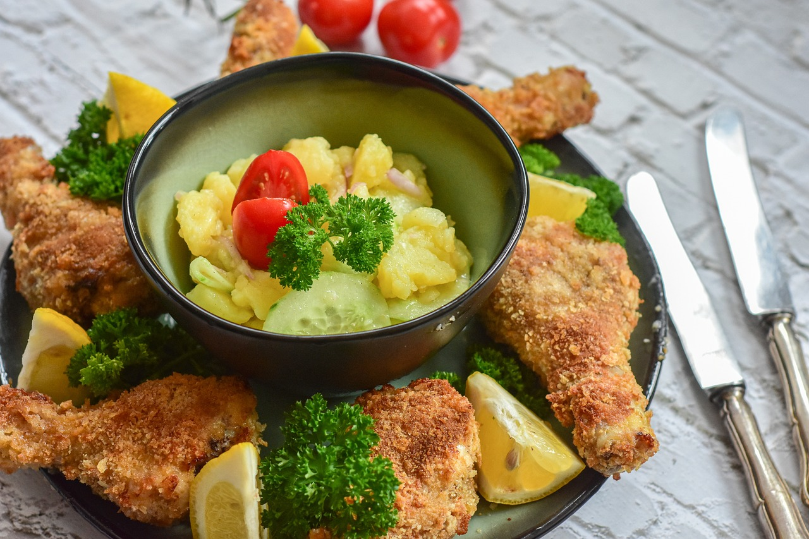

Kartoffelsalat

45 Min.
simpel
21.12.2022
143 kcal
Zutaten für
| 2 | kg | Kartoffeln |
| 1 | Pck | Speckwürfel |
| 1 | Zwiebel | |
| 200 | g | Fleischsalat |
| 2 | gekochte Eier | |
| 3 | EL | Essig |
| 1 | EL | Zucker |
| 5 | EL | Öl |
| Salz & Pfeffer |
Nährwerte für 1 Portion
Protein: 2,6 g
Kohlenhydrate: 9,6 g
Fett: 2,4 g
Zubereitung
ca. 20 Min
Fertig in ca. 45 Min
Kartoffeln gründlich waschen und kochen. In der Zwischenzeit, Zwiebeln kleinhacken und die Eier kochen.
Den Speck in einer Pfanne anbraten. Wenn die Kartoffeln fertig gekocht sind, die schälen und in Scheiben
schneiden. Kartoffeln, Speck, kleingehackte Eier, Zwiebel in eine Schüssel tun. Den Fleischsalat hinzugeben,
salzen und pfeffern. Zum Schluss noch Essig und Öl hinzugeben und alles vorsichtig umrühren. Den Kartoffelsalat
bei Zimmertemperatur ziehen lassen.
Guten Appetit!
Rezept erstellt von

Denise